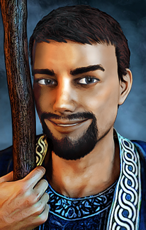
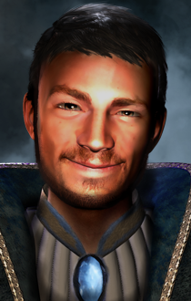
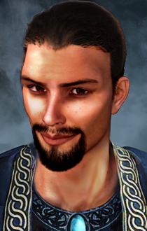
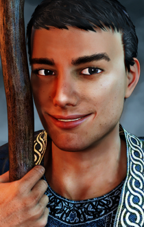

Brandock the Mage NPC for BGT, BG:EE(SoD), BGII:EE, and EET
A Kerzenburgforum Modification
Author: jastey
Portrait Artist: Acifer
German Soundset: Reader of the Runes
Languages: English, German
Platform: Windows, OSX, Linux
Brandock the Mage is an NPC Mod for BG1 for the whole Baldur's Gate Epic. It is natively compatible with BG:EE, SoD, BGII, BGT, BGII:EE, EET. No Tutu.

Content
NOTE: If you've previously installed the mod, remove it before extracting a new version. To do this, uninstall all previously installed components and delete the mod folder and executables.
Make sure the game is not running while installing the mod.
When installing or uninstalling, do not close the DOS window by clicking on the X button! Instead, press the Enter key when instructed to do so.
If you use SoD from GOG or Steam, you need to prepare your game with DLC Merger or modmerge before installing any mods:
argent77's DLC Merger
modmerge(if in doubt, use the DLC Merger instead)
For Enhanced Edition it is important that you istall the mod to the language version you are playing the game in. Otherwise, the dialogues of the mod will not show but give error messages.
The EE games are actively supported games. Please note that every patch update will wipe your current mod setup! If in the middle of a modded game you might want to delay the patch update as even after reinstalling the mods, you might not be able to continue with your old savegames.
Extract the contents of the mod archive to your game's main directory (BG:EE/SOD/BG2/BGT/BGII:EE/EET which contains the CHITIN.KEY file). On successful extraction, there should be an c#brandock folder and a setup-c#brandock.exe file in your game folder. To install, simply double-click setup-c#brandock.exe and follow the instructions on screen.
Run setup-c#brandock.exe in your game folder to reinstall, uninstall or otherwise change components.
Extract the mod archive, then copy the contents of the folder into your game folder (BG:EE/SOD/BG2/BGT/BGII:EE/EET which contains the CHITIN.KEY file). If properly extracted, you should have a "c#brandock" folder, setup-c#brandock, and setup-c#brandock.command in your game folder. To install, simply double-click setup-c#brandock.command and follow the instructions on screen.
Run setup-c#brandock.command in your game folder to reinstall, uninstall or otherwise change components.
Extract the contents of the mod to the folder of the game you wish to modify. Download the latest version of WeiDU for Linux from https://github.com/WeiDUorg/weidu/releases and copy WeiDU and WeInstall to /usr/bin. Following that, open a terminal and cd to your BG2 installation directory, run 'tolower' and answer Y to both queries. You can avoid running the second option (linux.ini) if you've already ran it once in the same directory. If you're unsure, running tolower and choosing both options is the safe bet.
Run WeInstall c#brandock in your game folder to install the mod. Then run wine BGMain.exe and start playing.
Brandock the Mage was implemented with WeiDU with highest priority to compatibility with other mods.
The mod is compatible with Imoen 4 Ever.
The mod is compatible with Endless BG1.
As an NPC mod, this mod should be installed after quest mods and before tweak mods. There is crossmod content included in the mod which should show if the install order suggestions are being followed.
To see most cross mod content, install the mod in the following order (this does not mean that the listed mods are listed in best install order!):
AFTER: BGQE, The Calling, BG1NPC, Brage's Redemption, Gavin BG1, Alternatives, NPC Strongholds
BEFORE: Grey the Dog.
Please note: So far, the mod officially contains BG1 content only. Brandock should already be fully functional in SoD with reactions to most game events, can be met and join the group in BGII, reacts to the mage stronghold and sphere quest, and has an epilogue, but apart from that content for BGII is not done yet.
Brandock is a mage NPC for Baldur's Gate. In BG1 Brandock can be met at the Coast Way where he is looking for help to fight an Ogre to retrieve his possessions back. Depending on whether he is in party when Melicamp is brought to Thalantyr he will have an extra quest that will remove him from the party for a time.
Brandock is very interested in magic books. Every time he gets time to study magic books the group encounters in the game it will increase his lore score. He is friendly and helpful, but it will take a little time until he opens up and tells the PC where he originates from, for reasons he will readily explain once he is ready to.
Brandock will wait at the Coast Way in the north. He needs help to fight an Ogre who is camping in front of a cave where Brandock needs to go in and retrieve some of his possessions. The Ogre can also be killed without Brandock in party but he will only recognize it after joining. The Ogre is the one that has Unshey's girdle.
In SoD, Brandock will be in front of the Ducal Palace, waiting in the crowd.
In BGII he can be found in a small house right in the north west besides the sphere in the slums.
Brandock comes with friendship talks, own quests, and banters with some NPCs, and player initiated dialogues. The latter offers the possibility to ask Brandock a lot of questions to topics he mentioned or events in game. While travelling with Brandock, the PC learns about why he is at the Sword Coast and where he is from - both deeply connected to well known locations of the BG games but I do not want to spoiler too much. Brandock talks a lot, and there will be several topics along the game's story that will keep his thoughts - and mouth - busy.
Brandock is very interested in magic books and wisdom. He will ask for time to go through every library found in game. If granted, this will give him a bonus to his lore score.
If you need the party slot for someone else, Brandock can be kicked out of the party and told to "stay close", then he will follow as a "familiar" or, as I call it "7th party member". If in 7th party member mode he needs to join the group from time to time to level up. In 7th party member mode Brandock can be selected and given commands, as well as told to use quick slot items. All his dialogues, banters, and interjections will trigger as normal.
To rejoin the group, talk to him and tell him you need "access to (his) inventory", and he will rejoin as a full party member. If you time this accordingly, the moment he is in group before any other kicked out NPC reaches the PC for his post-kickout dialogue is sufficient to let Brandock level up and rearrange his spells and items, without having to finally kick out any other party NPC to achieve this. (Unless those just leave without a follow-up dialogue, of course.)
He cannot die while following as a 7th party member, but will remain at 1 HP. If Brandock's HP fall to 1 HP during a fight, he will pass out. Healing him then will not change this. His alignment will change to "neutral" so enemies stop attacking him. Once the fight is over, he will regain consciousness, be healed fully, and rejoin the party as an ally/familiar. The full healing might be seen as a cheat, but it's one way to fix the engine behavior (not to call it bug) with Brandock dying upon rejoining if his HP are too low.
The 1 HP drop out can be prevented if Brandock is healed in time during a fight. If told to he will give a warning before his HP drop too low, but this seems to be buggy in BGT.
When first met in BG1, he will be a first level mage with the known spells Armor, Burning Hands, Charm Person, Protection from Petrification, Identify, Magic Missile, and Chromatic Orb. Brandock will level up upon first joining when the PC's HP are higher than his. This will also every time Brandock's XP are much lower than the PC's because of the 7th Party Member mode.
Brandock's alignment is Chaotic Good.
His stats are the following:
- STR: 15
- DEX: 13
- CON: 13
- INT: 18
- WIS: 12
- CHA: 13
Brandock starts with an increased Lore base score of 10 due to story reasons.
For the English version, Brandock uses the soundset "Male_Mage_1" from IWD:TotLM.
Brandock's portraits were generously created and provided by Acifer. There are four portraits to chose from in the second, optional component:



Insecure (Default portrait) ----- Friendly (Alternate 1) ----- Mischevious (Alternate 2) ----- Juvenile (Alternate 3)
Finding Brandock's possessions will start a cycle of dialogues and after that his quest. Retrieving his possessions as early as possible will make sure the quest will start before going to Candlekeep, which gives more content.
Having Brandock in party when bringing Melicamp to Thalantyr will trigger an event which will remove Brandock from the party until Melicamp is restored. This event is interesting for Brandock's personal development, but the mod can also played without it. The event can be prevented by forbitting Brandock to help Melicamp with a spell.
In some game cutscenes, Brandock might be visible at places where he shouldn't be as 7th party member. I'm not sure how to solve this.
Brandock has no clear fog of war effect, so when following as 7th party member, he might "vanish" behind the line of sight. Rearranging the whole group's position should bring him back at the PC's side. (The reason is that the engines cannot handle more than 8 creatures with CFoW - and that includes the 6 party members and cutscene spies.)
Acifer: Portraits, ideas, D&D knowledge, alpha testing. Thank you for giving Brandock a face (several, actually) with the wonderful portraits!
berelinde: Ideas
Brokenkatana: Proof reading (English).
Caedwyr: Proof reading and editing suggestions (English).
Gerri: German version of Valerie crossmod.
Lava: Area artist (Thalantyr's private quarters).
Reader of the Runes: German Soundset. Thank you for giving Brandock a voice!
Thanks to BioWare, Black Isle and Wizards of the Coast for Baldur's Gate 1, 2 and the Infinity Engine, and BeamDog for the revival of the games.
Thanks to Kerzenburgforum for hosting the mod and giving a place for exchange of ideas.
Thanks to all modders who developed and are maintaining the IE modding tools, without which this mod would not have been possible.
Thanks to all who play this mod or any of my mods, and also those of you who give feedback to help improving my mods. Modding would not be as much fun without you.
I totally mean this although I use this text modules in other readmes, too! :-)
This mod is unofficial Fan Content permitted under the Fan Content Policy. Not approved/endorsed by Wizards. Portions of the materials used are property of Wizards of the Coast. ©Wizards of the Coast LLC.
This mod is also not developed, supported, or endorsed by BioWare, Black Isle Studios, Interplay Entertainment Corp., Overhaul Games or Beamdog. All other trademarks and copyrights are property of their respective owners.
Version Beta 9:
- Fixed stutter for journal entry after first lore increase.
Version Beta 8:
- Fixed crossmod install errors for BG1NPC and ntotsc crossmod.
Version Beta 7:
- Dialogue about being infected with lycantrophy should not stutter.
- Dialogue about inside Durlag's Tower should not loop.
- 3 more banters with Xan added (BG1).
- more interjections added (BG1).
- Imoen's DV should be applied correctly in BG1NPC crossmod script.
- More Imoen BG1NPC crossmod.
- 7th party member mode should be removed correctly if Brandock changes from it to full member (or is kicked out instead).
- SoD: interjection into Ammon's dialogue should be to the right state.
- SoD: Brandock should not die instead of Ophyllis.
- SoD: added more randomness to when Brandock is chosen in Thrix' game.
- uses same area for Thalantyr's private quarters like bg1re and SotSC, from Lava.
- crossmod added: more crossmod banters with Brage NPC; more banter with Breagar; bg1re (Necromancer's Trouble, Dinner with Thalantyr); Ascalon's Questpack (The Great Karlini, From Wolves and Men); Balduran's Seatower; Solaufein's Rescue; Imoen4Ever; Lure Of Sirine's Call; Shades of the Sword Coast; SoA; Transitions).
- Structure of folders changed: mod uses "autotra" folder for text conversion so the original files stay unchanged.
- Quests finished: "lorepath", "half-ogre shapeshifting" (BG1+SoD), "scroll scribing".
- SoD: new optional component changes SoD banter to "Dialogue style".
- BGII: changed Ebrel's ring to his spell book. Added possibility to arrange for his funeral in the Temple of Helm.
Version Beta 6:
- journal entry for Brandock's restore book path should work as intended.
- book restore path: Brandock should not think that all ingredients are present if they are not.
- mapnote to Elvenhair only for BGT (EE adds an own one)
- dialog after death of Mutamin should not lead to stutter
- Brandock should not start banter before switching into 7th party member mode is done.
- Brandock should not start dialogue about Brage if Brandock-Brage banter happened.
- Thalantyr should start dialogue to help Brandock after Melicamp is restored.
- fix stutter bug in BGII
- proof readings by Caedwyr integrated.
- Slow Poison corrected to necromancy spell instead of innate.
- Thalantyr should start spell to help Brandock after the half-ogre incident also if Brandock was 7th party member when it happened.
Version Beta 5:
- BG1NPC crossmod (Imoen's tome) should install correctly.
Version Beta 4:
- (German version) Note about Brandock's Lore increase should not be in English.
- (English version) Integrated proof readings by Brokenkatana.
- Crossmod with Valerie mod added. Not approved yet by Tempest. Will be changed or removed if requested.
- (Crossmod compatibility) Brandock should not complain that no one cares about the attack in Beregost inn if Moidre from Glam's pack is near.
- crossmod with bg1npc (Imoen's tome) should be installed.
- Brandock should not refer to Bentha being killed if she survived (Nashkel Carnival).
- Revised Brandock's reactions if his book is not in inventory.
- Brandock's book(s) and bookcase are no longer tagged as critical items (Brandock's books should not always land in HC's inventory if Brandock changes into 7th member mode).
- C#5MINHP.spl should not be applied to party.
- Change into 7th party member mode and back should not be interrupted.
- Brandock's lore should be increased after reading spell components to create a Halruaan skyship.
- Brandock's lore should only increase once after the Niemain encounter.
- More interjections and lore increases added.
- Dialoge after Sarevok's death added (for BGT or if game remains in BG1 due to other mod).
- More crossmod added: Gavin BG1, Breagar BG1
Version Beta 3:
- Thalantyr should not try to initiate Brandock's Quest after Melicamp is rescued if Brandock-Melicamp interaction did not happen beforehand.
Version Beta 2:
-install will not fail if Alternatives in installed
-Brandock will not comment on Tranzig before he was met in Chapter 3
Version Beta 1:
- First public release with BG1 content.